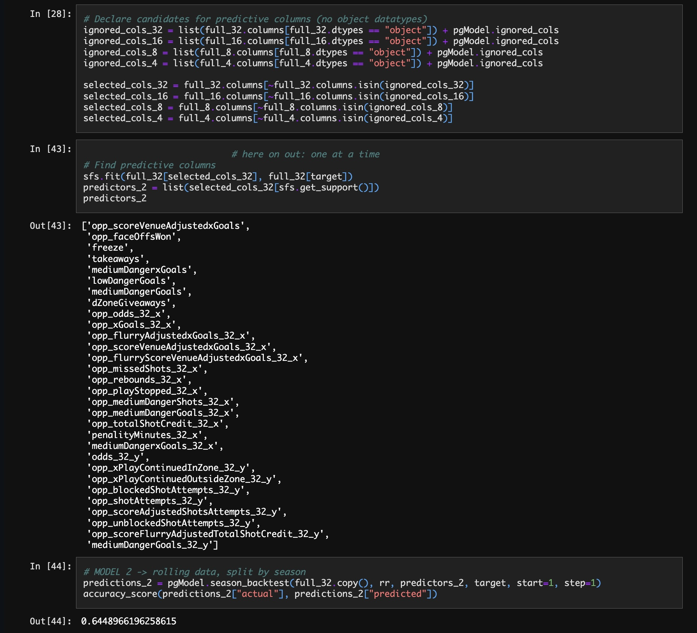

<div class="section bg-rg" style="min-height: calc(100vh - 331px)">
  <div class="sub-section" style="margin-top: 1em">
    <div class="desc-1">
      <div class="desc-1" style="font-size: 1.5em">
        Dive further into my data, modeling, and code in GitHub:
        <a href="https://github.com/stars/mpb9/lists/dumpnchase" target="_blank"
          >Codebase + Jupyter Notebooks</a
        >
      </div>
      <div class="media">
        
      </div>
    </div>
  </div>
</div>
